|
SuperPhot
unspecified
|


|
|
SuperPhot
unspecified
|
|
We wish to calculate (up to some specified precision) integrals of elliptical an Gaussian PSF (and their first and second order derivatives with respect to S, D and K) over a rectangle specified as in the following diagram:
or over a piece of a circle like this:
Let us denote the integral with 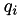, and its derivatives with subscripts.
For example:
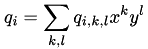
Note that the current implementation never requires derivative information for integrals over circle wedges, so even though those could be calculated, the present implementation does not. If at any time in the future this is required, it can be done in a fairly straightforward fashion.
The PSF model is:
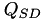
We use the following quantities defined in <++>
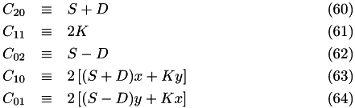
And approximate the PSF as
Where (as defined in <++>):
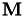
An upper limit to the error in the integral is:
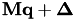
With:
![\begin{eqnarray} \Delta_{20}(I) &\equiv& \frac{C_{20}^{I+1}\delta x^{2I+2}}{2^{I+1}(I+1)!} \exp\left(-\frac{C_{20}\delta x^2}{2}\right)\\ \Delta_{11}(J) &\equiv& \left|\frac{C_{11}\delta x\delta y}{2}\right|^{J+1} \frac{1}{(J+1)!} \exp\left|\frac{C_{11}\delta x\delta y}{2}\right|\\ \Delta_{02}(K) &\equiv& \frac{C_{02}^{K+1}\delta y^{2K+2}}{2^{K+1}(K+1)!} \exp\left(-\frac{C_{02}\delta y^2}{2}\right)\\ \Delta_{10}(L) &\equiv& \left|\frac{C_{10}\delta x}{2}\right|^{L+1} \frac{1}{(L+1)!} \exp\left|\frac{C_{10}\delta x}{2}\right|\\ \Delta_{01}(M) &\equiv& \left|\frac{C_{01}\delta y}{2}\right|^{M+1} \frac{1}{(M+1)!} \exp\left|\frac{C_{01}\delta y}{2}\right| \end{eqnarray}](form_255.png)
and where 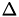 is the area over which the integral is being calculated:
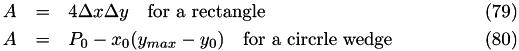
See the analytic expressions page for a definition of 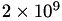 and 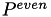.
![\begin{eqnarray*} \mathcal{I} &=& 4 Psf(x_0, y_0) \Delta x \Delta y\\ \left.\begin{array}{l} \mathcal{I}_S,\mathcal{I}_D,\mathcal{I}_K,\mathcal{I}_{SS}, \mathcal{I}_{SD},\\ \mathcal{I}_{SK},\mathcal{I}_{DD},\mathcal{I}_{DK},\mathcal{I}_{KK} \end{array}\right\} &=& 0\\ L_{2,0}=L_{1,1}=L_{0,2}=L_{1,0}=L_{0,1} &=& 1\\ c_{2,0}&=&\frac{S+D}{2}\\ c_{1,1}&=&K \\ c_{0,2}&=&\frac{S-D}{2} \\ c_{1,0}&=& \left((S+D) x_0 + K y_0\right)\\ c_{0,1}&=& \left((S-D) y_0 + K x_0\right)\\ f_{i,j}&=& c_{ij} \Delta x^i \Delta y^j\ ,\quad (i,j) \in \left\{(2,0), (1,1), (0,2), (1,0), (0,1)\right\}\\ \mathcal{O}_{i,j}&=&0\ ,\quad (i,j) \in \left\{(2,0), (1,1), (0,2), (1,0), (0,1)\right\}\\ S_{i,j}&=&1\ ,\quad (i,j) \in \left\{(2,0), (1,1), (0,2), (1,0), (0,1)\right\}\\ \Delta_{i,j}&=&\left\{ \begin{array}{l@{\ ,\quad}l} |f_{ij}|\exp(-f_{ij}) & (i,j)\in\left\{(2,0), (0,2)\right\}\\ |f_{ij}|\exp(|f_{ij}|) & i,j) \in \left\{(1,1), (1,0), (0,1)\right\} \end{array} \right. \end{eqnarray*}](form_259.png)
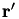 refer to the last terms in the 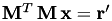 quantities, 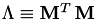 and 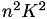 are just pre-stored shortcuts, are the expansion orders: 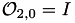, 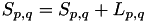, 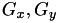, 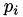, , and 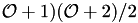 are the current limits on the error terms as given above.
First, note that we start only requiring 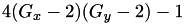 and hence 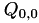. And at any step, we increase one of the 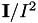, 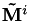,  , 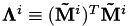 or 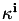 indices by one, so for any new term we request, we will have already requested all its prerequisites according to the recursion relation outlined here, as long as the summation is done with nested within , nested within , nested within nested within .
, 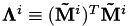 or 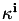 indices by one, so for any new term we request, we will have already requested all its prerequisites according to the recursion relation outlined here, as long as the summation is done with nested within , nested within , nested within nested within .
We store previously calculated 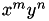 values in a pre-allocated array (which can be expanded if higher order terms are necessary). In addition we maintain two arrays ( 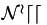 and 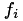) which keeps track of the terms calculated so far. In particular 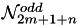 is the largest 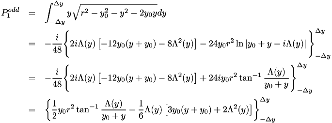 for which  has been calculated and
has been calculated and  is the largest for which
is the largest for which  has been calculated.
has been calculated.
The calculation of a new value proceeds as follows:
![\begin{eqnarray*} x_{max} &=& \sqrt{r^2-y_0^2}\\ y_{max} &=& \sqrt{r^2-x_0^2}\\ \Delta x &=& \frac{x_{max}-x_0}{2}\\ \Delta y &=& \frac{y_{max}-y_0}{2}\\ P_0 &=& \frac{1}{2}\left[y_{max}x_0 - y_0x_{max} + r^2\left(\tan^{-1}\frac{y_{max}}{x_0} - \tan^{-1}\frac{y_0}{x_{max}}\right) \right]\\ P_1 &=& \frac{1}{3}\left(x_{max}^3-x_0^3\right)\\ Q_{0,0} &=& Psf(x_0, y_0)\left[P_0 - x_0(y_{max}-y_0)\right]\\ Q_{0,1} &=& \\ Q_{1,0} &=& \\ Q_{1,1} &=& \\ \end{eqnarray*}](form_293.png)
and the remaining variables are exactly the same as for rectangle integrals, except for 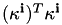, 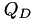, 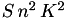, , 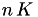, , , 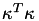 and 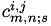, which are undefined.
The first thing that is done is to ensure that  and
and  are monotonically decreasing functions of the corresponding expansion orders. That means increasing and until 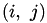 and 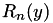. This is done in order to ensure that we do not stop prematurely refining the value of . This increasing of expansion order is detailed below.
are monotonically decreasing functions of the corresponding expansion orders. That means increasing and until 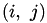 and 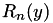. This is done in order to ensure that we do not stop prematurely refining the value of . This increasing of expansion order is detailed below.
After that, the algorithm for estimating is as follows:
![\[ \left|\Delta_{i,j}\right|\prod_{(k,l)\neq(i,j)} \left|S_{k,l}\right| \]](form_309.png)
This way are indeed the last terms in the quantities.
Next, if are not (2,0) or (0,2): , and . The reason why and  are not updated is because for high enough order
are not updated is because for high enough order  and , but due to the alternating signs in their expansion they oscillate, so the limits on the error will sometimes grow even though we have increased the order of the expansion. So it is better to leave them to their initial value of 1.
and , but due to the alternating signs in their expansion they oscillate, so the limits on the error will sometimes grow even though we have increased the order of the expansion. So it is better to leave them to their initial value of 1.
Then for rectangles the quantities are updated according to:
![\[ \mathcal{I}_*=\mathcal{I}_*+4 Psf(x_0, y_0) \Delta x \Delta y \sum^{\mathcal{O}_{2,0}}_{i=i_0} (-1)^i\frac{f_{2,0}^i}{i!} \sum^{\mathcal{O}_{1,1}}_{j=j_0} (-1)^j\frac{f_{1,1}^j}{j!} \sum^{\mathcal{O}_{0,2}}_{k=k_0} (-1)^k\frac{f_{0,2}^k}{k!} \sum^{\mathcal{O}_{1,0}}_ {\begin{array}{c}l=l_0\\j+l:even\end{array}} (-1)^l\frac{f_{1,0}^l}{l!(2i+j+l+1)} \sum^{\mathcal{O}_{0,1}}_ {\begin{array}{c}m=m_0\\j+m:even\end{array}} (-1)^m\frac{f_{0,1}^m}{m!(2k+j+m+1)}\Lambda_* \]](form_320.png)
where:
![\begin{eqnarray*} i_0 &=& \left\{\begin{array}{l@{\ ,\ }l} 0 & (p,q)\neq(2,0)\\ \mathcal{O}_{2,0} & (p,q)=(2,0) \end{array}\right.\\ j_0 &=& \left\{\begin{array}{l@{\ ,\ }l} 0 & (p,q)\neq(1,1)\\ \mathcal{O}_{1,1} & (p,q)=(1,1) \end{array}\right.\\ k_0 &=& \left\{\begin{array}{l@{\ ,\ }l} 0 & (p,q)\neq(1,1)\\ \mathcal{O}_{0,2} & (p,q)=(0,2) \end{array}\right.\\ l_0 &=& \left\{\begin{array}{l@{\ ,\ }l} j\%2 & (p,q)\neq(1,0)\\ \mathcal{O}_{1,0}+(\mathcal{O}_{1,0}+j)\%2 & (p,q)=(1,0) \end{array}\right.\\ m_0 &=& \left\{\begin{array}{l@{\ ,\ }l} j\%2 & (p,q)\neq(0,1)\\ \mathcal{O}_{0,1}+(\mathcal{O}_{0,1}+j)\%2 & (p,q)=(0,1) \end{array}\right.\\ \Lambda &=& 1\\ \Lambda_S &=& \frac{i}{2 c_{2,0}} + \frac{k}{2 c_{0,2}} + \frac{x_0 l}{c_{1,0}} + \frac{y_0 m}{c_{0,1}}\\ \Lambda_D &=& \frac{i}{2 c_{2,0}} - \frac{k}{2 c_{0,2}} + \frac{x_0 l}{c_{1,0}} - \frac{y_0 m}{c_{0,1}}\\ \Lambda_K &=& \frac{j}{c_{1,1}} + \frac{y_0 l}{c_{1,0}} + \frac{x_0 m}{c_{0,1}}\\ \Lambda_{SS} &=& \Lambda_S^2 - \left( \frac{i}{4 c_{2,0}^2} + \frac{k}{4 c_{0,2}^2} + \frac{x_0^2 l}{c_{1,0}^2} + \frac{y_0^2 m}{c_{0,1}^2}\right)\\ \Lambda_{SD} &=& \Lambda_S*\Lambda_D - \frac{i}{4 c_{2,0}^2} + \frac{k}{4 c_{0,2}^2} -\frac{x_0^2 l}{c_{1,0}^2} + \frac{y_0^2 m}{c_{0,1}^2}\\ \Lambda_{SK} &=& \Lambda_S \Lambda_K - x_0 y_0\left( \frac{l}{c_{1,0}^2} + \frac{m}{c_{0,1}^2}\right)\\ \Lambda_{DD} &=& \Lambda_D^2 - \left( \frac{i}{4 c_{2,0}^2} + \frac{k}{4 c_{0,2}^2} + \frac{x_0^2 l}{c_{1,0}^2} + \frac{y_0^2 m}{c_{0,1}^2}\right)\\ \Lambda_{DK} &=& \Lambda_D \Lambda_K - x_0 y_0\left( \frac{l}{c_{1,0}^2} - \frac{m}{c_{0,1}^2}\right)\\ \Lambda_{KK} &=& \Lambda_K^2 -\frac{x_0^2 m}{c_{0,1}^2} - \frac{y_0 l}{c_{1,0}} - \frac{j}{c_{1,1}^2} \end{eqnarray*}](form_321.png)
 1.8.11
1.8.11